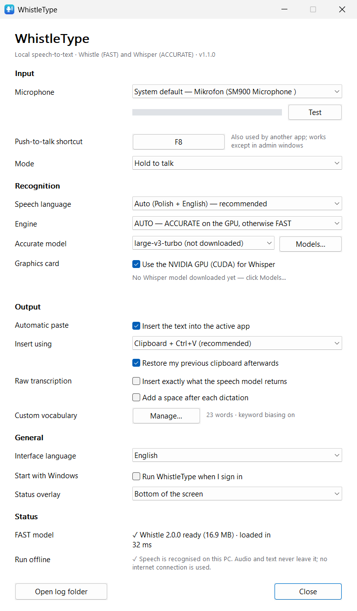
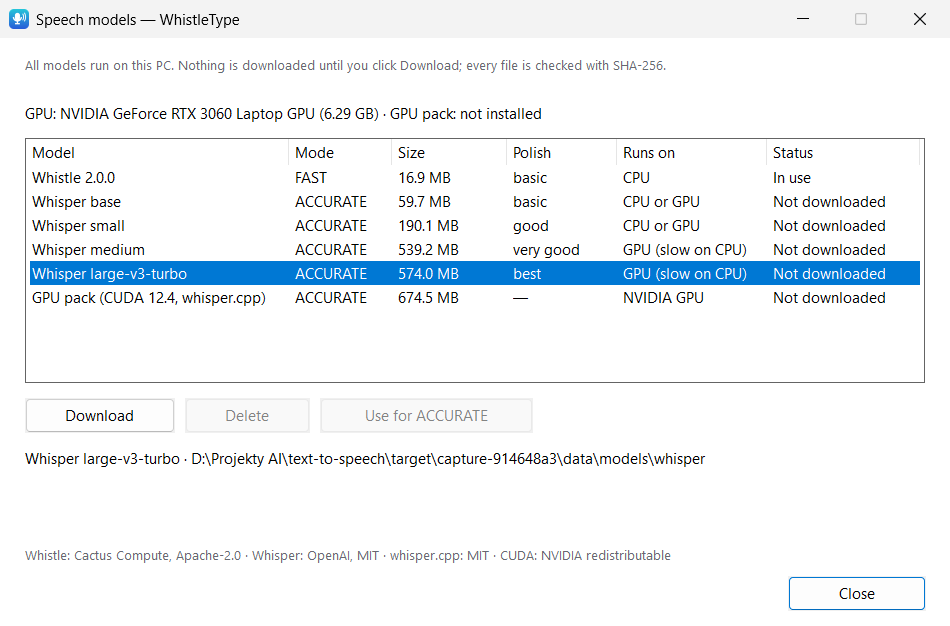

Global push-to-talk
Hold to talk or press-to-toggle, any shortcut you like, Esc cancels. Works in administrator windows too (the text waits on the clipboard).
Free & open source · Windows 10 / 11
WhistleType types what you say wherever your cursor is — in Claude Code, VS Code, a terminal, a browser or a chat. Speech is recognised entirely on your PC: nothing is sent to the cloud.
A small overlay shows Listening… with a live level meter. The key never reaches the app you are in.
Polish, English, or Polish sentences full of English tech terms — the main use case.
The text is pasted at the cursor and your clipboard is put back exactly as it was.
Hold to talk or press-to-toggle, any shortcut you like, Esc cancels. Works in administrator windows too (the text waits on the clipboard).
No speech API, no account, no telemetry. After the model download it works offline — verified by tests that watch the app's network sockets.
FAST: Cactus Compute Whistle on the CPU, ~0.1 s per phrase. ACCURATE: OpenAI Whisper via whisper.cpp. AUTO picks for you.
An optional GPU pack (official whisper.cpp CUDA build) runs Whisper large-v3-turbo in ~0.5 s per sentence, with automatic CPU fallback.
Every clipboard format is backed up and restored; the dictation is kept out of clipboard history. Or type characters without touching the clipboard.
Add names, products and jargon (Kubernetes, useEffect, Gradle…). Whistle uses keyword biasing; Whisper gets them as a prompt.
A speech gate rejects silence, typing, breathing and clicks before recognition — so nothing like “Thank you.” appears out of nowhere.
One small native app (Rust + Win32): 0% CPU when idle, ~40 MB RAM in FAST mode. Polish and English interface.
Switch in Settings or from the tray menu. AUTO (the default) uses Whisper when it is ready on your GPU and Whistle otherwise.
| FAST | ACCURATE | |
|---|---|---|
| Engine | Cactus Compute Whistle 2.0.0 | OpenAI Whisper (base → large-v3-turbo) via whisper.cpp |
| Runs on | CPU | NVIDIA GPU (CUDA), CPU fallback |
| Download | 16.9 MB | 60–574 MB model + 675 MB GPU pack |
| Short phrase | ~0.1 s | ~0.4 s (GPU) |
| Memory while ready | ~40 MB RAM | ~0.5 GB RAM + ~1 GB VRAM |
| Best for | any PC, instant short commands | best Polish quality, long dictation, technical terms |
| Configuration | WER | CER | Time / sentence | VRAM |
|---|---|---|---|---|
| Whistle 2.0.0 · CPU | 35.5 % | 11.0 % | 0.73 s | — |
| Whisper base · GPU | 33.4 % | 9.3 % | 0.36 s | 0.39 GB |
| Whisper small · GPU | 15.5 % | 4.7 % | 0.49 s | 0.65 GB |
| Whisper medium · GPU | 8.4 % | 2.9 % | 0.88 s | 1.30 GB |
| Whisper large-v3-turbo · GPU | 5.7 % | 2.1 % | 0.52 s | 0.98 GB |
| Whisper small · CPU only | 17.6 % | 4.8 % | 6.9 s | — |
Measured on a laptop with a Ryzen 7 5800H and an RTX 3060 Laptop GPU (6 GB), Whisper models quantised to q5. Without an NVIDIA GPU, Whisper models that beat Whistle need several seconds per sentence — that is why AUTO only switches to Whisper on the GPU. Full method and raw numbers in PERFORMANCE.md.


Your voice is processed on your computer and nowhere else.
Per-user install, no administrator rights. Optional start with Windows; clean uninstall from Settings → Apps.
WhistleType-1.1.0-setup-x64.exe · 4.5 MBUnzip anywhere. Create an empty file WhistleType.portable next to the exe to keep settings and models in .\data.
The builds are not code-signed yet, so Windows SmartScreen may warn on first launch (More info → Run anyway). Checksums: SHA256SUMS.txt · all releases.
WhistleType is released under the MIT licence. It builds on these projects, each under its own licence:
| Component | Author | Licence | How it is used |
|---|---|---|---|
| Whistle 2.0.0 & Needle 3 | Cactus Compute | Apache-2.0 | FAST engine; engine DLL bundled, model downloaded on first run |
| whisper.cpp / ggml | the ggml authors | MIT | ACCURATE engine; CPU DLLs bundled, CUDA build optional download |
| Whisper | OpenAI | MIT | model weights, downloaded on request |
| CUDA runtime, cuBLAS | NVIDIA | CUDA EULA (redistributable) | inside the optional GPU pack |
| Visual C++ runtime | Microsoft | redistributable | needed by whisper.cpp, bundled |
| Rust crates | various | MIT / Apache-2.0 / Zlib | compiled into the app |
Full list with versions and licence texts: THIRD_PARTY_NOTICES.md. WhistleType is an independent project and is not affiliated with or endorsed by Cactus Compute, OpenAI, NVIDIA or Microsoft. Benchmark audio: Google FLEURS (CC-BY-4.0).